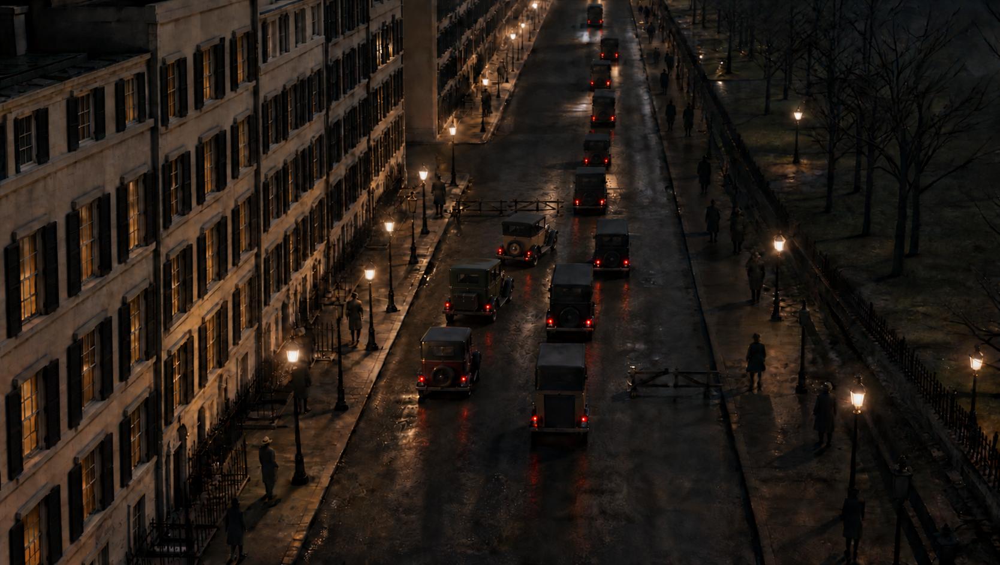

01
VIDEOGoogle Maps 3D Tiles in Unreal Engine
The real London location
A LOCATION BECOMES A SHOT
Google Maps provides London’s geography, topography and real-world scale.
The greybox controls the camera and movement. The image defines the look. AI renders the shot.
The real London location
Rebuild & animate in Unreal Engine
Set the architecture, materials & light

View still ↗Greybox motion + image look · Seedance 2.5